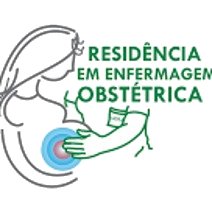
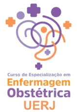

Programação Científica
Diversidade, Equidade e Acesso
15, 16 e 17 de julho de 2026
UERJ · Rio de Janeiro — RJ
Promoção
Organização

Realização

Apoio Institucional
Diversidade, Equidade e Acesso
15, 16 e 17 de julho de 2026
UERJ · Rio de Janeiro — RJ


| Sala | Curso | Ministrante | Instituição |
|---|---|---|---|
| Manhã · 08h às 12h · UERJ (sala indicada em cada curso) | |||
| Sala 815 · Ed. Paulo de Carvalho | Punção venosa neonatal com realidade aumentada (VeinViewer®) | Profª Drª Ana Cláudia Monteiro | UERJ |
| Sala 715 · Ed. Paulo de Carvalho | Manejo da HPP em cenários não hospitalares – Estabilização e Transporte Seguro | Profª Ma. Anna Christina de Almeida Porréca | UERJ |
| Sala 23 · Pav. Nalva Pereira Caldas | Interpretação de Laudos Ultrassonográficos em Obstetrícia | Prof. Me. Reginaldo Lemos Soares | IGE |
| Tarde · 13h às 17h · UERJ (sala indicada em cada curso) | |||
| Sala 20 · Pav. Nalva Pereira Caldas | Manejo Clínico dos Traumas Perineais associado à Laserterapia | Profª Drª Ana Luiza Zapponi | Prof. Liberal |
| Sala 815 · Ed. Paulo de Carvalho | Termoproteção do Recém-nascido | Prof. Dr. José Antônio de Sá Neto | UERJ |
| Sala 24 · Pav. Nalva Pereira Caldas | Atualização em procedimentos de reconstrução perineal e segurança farmacológica | Profª Ma. Anna Christina de Almeida Porréca | UERJ |
| Sala 22 · Pav. Nalva Pereira Caldas | Avaliação do RN em sala de parto e aplicação de Escalas para Exame Físico | Profª Ma. Michele de Lima Janotti Quaresma | UERJ |
Cursos paralelos com inscrição específica — cada participante escolhe um curso por turno. Manhã: 08h às 12h · Tarde: 13h às 17h.
| Horário | Atividade | Responsável | Local |
|---|---|---|---|
| Manhã · 08h30 às 12h | |||
| 08h30 | Abertura OficialSolenidade de abertura com a mesa de autoridades (composição abaixo) | Mesa de autoridades | Capela Ecumênica |
| 11h00 | Conferência de AberturaCuidado perinatal especializado: impacto na qualidade e segurança da atenção materno-infantil | Conferencista: Profª Drª Marilanda Lopes de Lima | Capela Ecumênica |
| Horário | Atividade | Responsável | Local |
|---|---|---|---|
| Tarde · 13h às 17h · Apresentação de Trabalhos | |||
| 13h às 17h | Apresentação de TrabalhosSessões orais e pôsteres · sessões orais em 5 salas por eixo · salas e horários ao final desta programação | Coordenação: Profª Drª Débora Chaves e Profª Ma. Anna Christina de Almeida Porréca | a definir |
Sessões orais simultâneas, organizadas por eixo temático. A distribuição por sala e horário será divulgada na página de trabalhos aprovados.
| Debate | Tema em debate | Debatedor(a) | Instituição |
|---|---|---|---|
| Painel 1 — Violações aos direitos das mulheres e dos recém-nascidos · 09h00–10h45 · Capela Ecumênica | |||
| Debatedor 1 | Violência obstétrica: atualidades sobre os caminhos para a tipificação deste crime e a construção do conceito | Exmª Srª Juíza Mariana Moreira Tangari | TJRJ |
| Debatedor 2 | Caminhos da implementação de políticas públicas de saúde na garantia do acesso ao cuidado | Enfª Ma. em Saúde Materno-Infantil Angela Mitrano Perazzini de Sá | GSM |
| Debatedor 3 | Direitos dos recém-nascidos no Brasil | Profª Drª Ana Letícia Gomes | UFRJ |
| Painel 2 — Segurança no cenário do cuidado obstétrico e neonatal · 11h00–13h00 · Capela Ecumênica | |||
| Debatedor 1 | Parto Domiciliar Planejado | Enfª Profª Drª Heloisa Lessa | Casa Colo Acolhimento Familiar Ltda. |
| Debatedor 2 | Casa de Parto | Enfª Ma. Simone Pereira dos Santos | Diretora da Casa de Parto David Capistrano Filho |
| Debatedor 3 | Maternidade hospitalar de natureza pública | Enfª Ma. Renata Alves de Lima Nunes Barbosa | Superintendência de Atenção Primária — Secretaria Estadual de Saúde |
| Debatedor 4 | Maternidade hospitalar de natureza suplementar/privada – ANS | Prof. Dr. José Felipe Riani Costa | Agência Nacional de Saúde Suplementar |
| Painel 3 — Trabalho em equipe e competência para o cuidado no caminho da formação-intervenção-avaliação: ampliando redes institucionais para a mudança de modelo · 14h00–16h00 · Capela Ecumênica | |||
| Debatedor 1 | CEEO – Rede Alyne | Profª Drª Claudia Maria Messias | UFF |
| Debatedor 2 | Residência em Enfermagem Obstétrica | Profª Drª Midian Oliveira Dias | UERJ |
| Debatedor 3 | Residência em Enfermagem Neonatal | Profª Drª Marcele Sampaio de Freitas Guimarães Ribeiro | UERJ |
| Debatedor 4 | Residência Multiprofissional em Saúde da Mulher — HESFA/UFRJ | Enfª Ma. Isabelle Mangueira de Paula Gaspar | HESFA/UFRJ |
| Encerramento · 16h00–17h00 | |||
| 17h00 | Apresentação musical de Encerramento | Profª Ma. Anna Christina de Almeida Porréca · Prof. Dr. Rubem Figueiredo Sadok Menna Barreto | Capela Ecumênica |
Todos os painéis acontecem na Capela Ecumênica, no campus da UERJ. Mediação/coordenação de cada painel a confirmar.
Sala 815 · Edifício Paulo de Carvalho · 22 trabalhos · 10 min por apresentação (2 min de intervalo entre elas).
| # | Horário | Título | Relator(a) |
|---|---|---|---|
| 1 | 13h00 | A ASSISTÊNCIA BASEADA EM EVIDÊNCIAS CIENTÍFICAS DURANTE O PRÉ NATAL, DE BAIXO RISCO, POR ENFERMEIROS PARA PREVENÇÃO DE MORTALIDADE MATERNA. | Samara de Andrade Ferreira |
| 2 | 13h12 | A MUDANÇA NO RASTREIO DO CÂNCER DE COLO DE ÚTERO DO PAPANICOLAU PARA O DNA-HPV NO MUNICÍPIO DE PETRÓPOLIS - RJ | Mariana Santana Schroeter |
| 3 | 13h24 | A QUALIFICAÇÃO DA ASSISTÊNCIA À MULHER VÍTIMA DE VIOLÊNCIA SEXUAL A PARTIR DA IMPLEMENTAÇÃO DO PROTOCOLO E CAPACITAÇÃO DOS ENFERMEIROS ATUANTES NAS UB | Mariana Roza Leonardo |
| 4 | 13h36 | A REALIZAÇÃO DO PRÉ NATAL NA APS: PRÁTICAS PARA MELHOR ADESÃO ÀS CONSULTAS | Mariana Santana Schroeter |
| 5 | 13h48 | ACOLHIMENTO E CUIDADO DE ENFERMAGEM ÀS MULHERES EM SITUAÇÃO DE VIOLÊNCIA DOMÉSTICA NA ATENÇÃO À SAÚDE DA MULHER: REFLEXÕES PARA ASSISTÊNCIA | ANDREIA NEVES DE SANT ANNA |
| 6 | 14h00 | ALEITAMENTO MATERNO: EDUCAÇÃO EM SAÚDE SOBRE INVERDADES, VERDADES E TÉCNICAS DE PEGA E POSICIONAMENTO | Laíssa de Paula Damaceno |
| 7 | 14h12 | AMPLIAÇÃO DO ACESSO AO DISPOSITIVO INTRAUTERINO POR MEIO DA QUALIFICAÇÃO DE ENFERMEIROS NA ATENÇÃO PRIMÁRIA À SAÚDE: RELATO DE EXPERIÊNCIA EM DUQUE DE | Renata Alves de Lima Nunes Barbosa |
| 8 | 14h24 | ASSISTÊNCIA MATERNO-INFANTIL EM TERRITÓRIOS DE EXTREMA VULNERABILIDADE SOCIAL: RELATO DE EXPERIÊNCIA | Isabela Cabral da Cunha Souza |
| 9 | 14h36 | ATUAÇÃO DO ENFERMEIRO NO PRÉ-NATAL DE GESTANTES EM SITUAÇÃO DE RUA NO RIO DE JANEIRO: PROJETO DE PESQUISA | Michele Carneiro Martins |
| 10 | 14h48 | AUTONOMIA REPRODUTIVA EM DISPUTA: TENSÕES ENTRE NORMAS INSTITUCIONAIS E DESEJOS REPRODUTIVOS NO COTIDIANO DA ASSISTÊNCIA | Mariana Barbosa de Araujo |
| 11 | 15h00 | COBERTURA VACINAL CONTRA O VÍRUS SINCICIAL RESPIRATÓRIO (VSR) EM GESTANTES: PANORAMA DAS REGIÕES BRASILEIRAS APÓS A INCORPORAÇÃO DA VACINA NO SUS | Ana Clara de Almeida Neves |
| 12 | 15h12 | CONHECIMENTO DE GESTANTES DA ATENÇÃO PRIMÁRIA À SAÚDE SOBRE VIOLÊNCIA OBSTÉTRICA | Suelen Silva de Souza |
| 13 | 15h24 | CUIDADO PRÉ-NATAL: A IMPORTÂNCIA DA EDUCAÇÃO EM SAÚDE PARA A GESTANTE | Alexsandra Baptista Diogenes |
| 14 | 15h36 | DESAFIOS PARA O ACESSO À CONTRACEPÇÃO NO BRASIL: UMA ANÁLISE CRÍTICA SOB A ÓTICA DE ANDERSEN | Larissa Nunes de Abreu |
| 15 | 15h48 | EQUIDADE NA ATENÇÃO OBSTÉTRICA A GESTANTES TRANS NO SUS: CAPACITAÇÃO E PROTOCOLOS DE ENFERMAGEM | Lígia D’arc Silva Rocha Prado |
| 16 | 16h00 | MORTALIDADE MATERNA NA REGIÃO DA BAIXADA LITORÂNEA DO ESTADO DO RIO DE JANEIRO: TENDÊNCIA TEMPORAL (2010–2023) | Júlia Pereira Neto |
| 17 | 16h12 | MORTALIDADE MATERNA NO BIÊNIO PANDÊMICO (2020-2021): FATORES DE RISCO E DISPARIDADES NA RAZÃO DE MORTE MATERNA | Andressa Mel Alves dos Santos |
| 18 | 16h24 | O PREPARO DA MULHER GESTANTE PARA O PARTO NORMAL: CONTRIBUIÇÃO DA ENFERMEIRA NO CONTEXTO DA ATENÇÃO BÁSICA | Fernanda Gonçalves Grangeiro Nascimento de Paulo |
| 19 | 16h36 | PERFIL EPIDEMIOLÓGICO DOS ÓBITOS MATERNOS NA REGIÃO DA BAIXADA LITORÂNEA DO ESTADO DO RIO DE JANEIRO (2010–2023) | Ana Clara de Almeida Neves |
| 20 | 16h48 | PLANEJAMENTO REPRODUTIVO NA SAÚDE E BEM-ESTAR DE MULHERES NEGRAS: DESENVOLVIMENTO DE TECNOLOGIA EDUCATIVA NO ÂMBITO DA LASMUN | Daniella Cristine Liberato Rocha |
| 21 | 17h00 | RODA DE GESTANTE COMO UM ESPAÇO INTERPESSOAL TERAPÊUTICO: UM RELATO DE EXPERIÊNCIA | Michele Carneiro Martins |
| 22 | 17h12 | ROMPENDO COM OS MITOS, PERMEANDO A VIDA: RELATO DE EXPERIÊNCIA SOBRE EDUCAÇÃO EM SAÚDE NA PERSPECTIVA DA SEXUALIDADE NA GESTAÇÃO | Milena Gabrielle Soares dos Santos |
Sala 816 · Edifício Paulo de Carvalho · 22 trabalhos · 10 min por apresentação (2 min de intervalo entre elas).
| # | Horário | Título | Relator(a) |
|---|---|---|---|
| 1 | 13h00 | A PRÁXIS DA ENFERMAGEM OBSTÉTRICA NA ASSISTÊNCIA AO PARTO: UM ENSAIO TEÓRICO COM BASE EM KATHARINE KOLCABA | Ana Isabella Sousa Almeida |
| 2 | 13h12 | ASSISTÊNCIA AO PARTO VAGINAL EM MULHERES COM SÍNDROMES HIPERTENSIVAS: ANÁLISE NO ESTADO DO RIO DE JANEIRO DO ESTUDO NASCER NO BRASIL II | Mariana Burgos Waltz |
| 3 | 13h24 | ATUAÇÃO DA ENFERMAGEM OBSTÉTRICA NA SALA DE PARTO DE UMA MATERNIDADE ESCOLA E A HUMANIZAÇÃO DO CUIDADO: RELATO DE EXPERIÊNCIA | Karen Vasconcelos de Carvalho |
| 4 | 13h36 | ATUAÇÃO DO ENFERMEIRO NOS CUIDADOS PÓS PARTO IMEDIATO | Juliana Lima de Sa Vianna |
| 5 | 13h48 | CONSTRUÇÃO COLETIVA DO DIAGNÓSTICO SITUACIONAL DO SERVIÇO COMO ESTRATÉGIA REFLEXIVA PARA QUALIFICAÇÃO DA PRÁTICA PROFISSIONAL | Glaucia Schuabb |
| 6 | 14h00 | CONSTRUÇÃO DE UMA VIDEOTECA SOBRE VIOLÊNCIA OBSTÉTRICA E RACISMO OBSTÉTRICO PARA GESTANTES | Estela Moura Viana |
| 7 | 14h12 | FALE COM A LIA: CONSTRUÇÃO E VALIDAÇÃO DE UM CHATBOT EDUCACIONAL PARA GESTANTES | Suelen Silva de Souza |
| 8 | 14h24 | FAMÍLIAS TAMBÉM CUMPREM PENA? REPERCUSSÕES DO ENCARCERAMENTO DE MULHERES E OS DESAFIOS PARA A ENFERMAGEM | Vanessa dos Santos Pereira |
| 9 | 14h36 | IMPLEMENTAÇÃO DO PRONTUÁRIO AFETIVO EM MATERNIDADE DE ALTO RISCO: RELATO DE EXPERIÊNCIA | Abilene do Nascimento Gouvea |
| 10 | 14h48 | LUTO PERINATAL NA PERSPECTIVA DA SAÚDE MATERNO-INFANTIL: RELATO DE EXPERIÊNCIA A PARTIR DO CURTA-METRAGEM "DA SUA, MARIA" | Gabriela Azevedo dos Santos |
| 11 | 15h00 | MÉTODOS DE COLETA MENSTRUAL UTILIZADOS POR USUÁRIAS DE UM CONSULTÓRIO DE ENFERMAGEM | Ana Lívea Azevedo Mattos Lofrano |
| 12 | 15h12 | NARRATIVAS DE MULHERES COM DEFICIÊNCIA SOBRE O CICLO GRAVÍDICO-PUERPERAL: UMA REVISÃO SISTEMÁTICA DA EXPERIÊNCIA REPRODUTIVA | Ludmila Espinoso da Silva |
| 13 | 15h24 | O ENCONTRO DAS CONTINGÊNCIAS, OS DESENCONTROS ESCOLHIDOS OU IMPOSTOS E O NOVO FAZER EM GESTÃO NA PANDEMIA DE COVID-19 | Elaine Maia da Silva Beruthe Lourenço |
| 14 | 15h36 | O PAPEL DA ENFERMAGEM NO FORTALECIMENTO DO VÍNCULO MATERNO DIANTE DA DEPRESSÃO PÓS-PARTO: REFLEXÕES PARA O CUIDADO INTEGRAL À MULHER E RECÉM-NASCIDO | ANDREIA NEVES DE SANT ANNA |
| 15 | 15h48 | PERFIL DE MULHERES COM PARTO ASSISTIDO POR ENFERMEIRAS NO ESTADO DO RIO DE JANEIRO: RESULTADOS DO ESTUDO NASCER NO BRASIL II | Talita Teresa do Carmo |
| 16 | 16h00 | PERFIL EPIDEMIOLÓGICO DA HEMORRAGIA PÓS-PARTO NO RIO DE JANEIRO: UMA ANÁLISE RETROSPECTIVA EPIDEMIOLÓGICA | Lívia dos Santos Machado |
| 17 | 16h12 | PREVENÇÃO DE LESÕES PERINEAIS NO PERÍODO GRAVÍDICO: ESTRATÉGIAS DE CUIDADO | Bheatriz da Costa Diniz Olegário |
| 18 | 16h24 | PRODUÇÃO DE TECNOLOGIAS EDUCACIONAIS PARA A PREVENÇÃO DA VIOLÊNCIA OBSTÉTRICA: RELATO DE EXPERIÊNCIA EXTENSIONISTA | Estela Moura Viana |
| 19 | 16h36 | PROJECT MANAGEMENT OFFICE (PMO): ESTRATÉGIA DE GESTÃO PARA IMPLANTAÇÃO DE UMA MATERNIDADE E UNIDADE DE TERAPIA NEONATAL | Karina Rangel da Silva Garcia |
| 20 | 16h48 | TECNOLOGIAS NÃO FARMACOLÓGICAS E HUMANIZAÇÃO DA ASSISTÊNCIA DE ENFERMAGEM NO TRABALHO DE PARTO: UMA REVISÃO INTEGRATIVA | Alessandra Teixeira Velasco |
| 21 | 17h00 | TÍTULO: COMUNICAÇÃO DE RISCO EM SAÚDE DIANTE DAS ONDAS DE CALOR: REVISÃO DOCUMENTAL DE MATERIAIS EDUCATIVOS NACIONAIS E INTERNACIONAIS | Maria Eduarda Santos de Mello |
| 22 | 17h12 | USO DE BOAS PRÁTICAS EM PARTOS ASSISTIDOS POR ENFERMEIRAS NO ESTADO DO RIO DE JANEIRO: RESULTADOS DO ESTUDO NASCER NO BRASIL II | Talita Teresa do Carmo |
Sala 20 · Pavilhão Nalva Pereira Caldas · 25 trabalhos · 10 min por apresentação (2 min de intervalo entre elas).
| # | Horário | Título | Relator(a) |
|---|---|---|---|
| 1 | 13h00 | ALOJAMENTO CONJUNTO: REFLEXÕES SOBRE A INTERNAÇÃO PROLONGADA DE PUÉRPERAS EM UMA MATERNIDADE DE ALTO RISCO FETAL | Isabella Menezes dos Santos |
| 2 | 13h12 | APLICAÇÃO DO PROCESSO DE ENFERMAGEM NO MANEJO DE LESÃO POR PRESSÃO EM UNIDADE NEONATAL: RELATO DE CASO | Amanda de Andrade Bezerra |
| 3 | 13h24 | ASSISTÊNCIA À FAMÍLIA DIANTE DE LUTO NEONATAL POR CARDIOPATIA CONGÊNITA CRÍTICA: RELATO DE EXPERIÊNCIA DE RESIDENTES DE ENFERMAGEM | Loran Buty Sodre Faria |
| 4 | 13h36 | BLOCO DAS PEITUDAS: Fortalecendo a cultura do aleitamento materno (título a confirmar) | Luana Carvalho dos Santos |
| 5 | 13h48 | COLONIZAÇÃO POR STAPHYLOCOCCUS AUREUS EM NEONATOS EM ALOJAMENTO CONJUNTO DE MATERNIDADE DE BAIXO RISCO NO INTERIOR DO RIO DE JANEIRO | Júlia Pereira Neto |
| 6 | 14h00 | COLOSTROTERAPIA OROFARÍNGEA E SEUS EFEITOS NO CRESCIMENTO E NA RESPOSTA IMUNE DE PREMATUROS: EVIDÊNCIAS PARA O CUIDADO DE ENFERMAGEM | Júlia Tavares Souza |
| 7 | 14h12 | CONSTRUÇÃO E VALIDAÇÃO DE UMA CARTILHA DIGITAL PARA APOIAR PAIS E FAMILIARES NO CUIDADO DOMICILIAR AO RECÉM-NASCIDO | Ana Lívea Azevedo Mattos Lofrano |
| 8 | 14h24 | CUIDADO DE ENFERMAGEM NA EXSANGUINEOTRANSFUSÃO: RELATO DE CASO | Vitória Torquato Silva Miranda Simplicio |
| 9 | 14h36 | CUIDADOS DE ENFERMAGEM AO RECÉM-NASCIDO SUBMETIDO À HIPOTERMIA TERAPÊUTICA: RELATO DE EXPERIÊNCIA | Marcella Barreto Maia Caldas |
| 10 | 14h48 | DESAFIOS E MANEJO DA AMAMENTAÇÃO DE GEMELARES EM TERAPIA INTENSIVA NEONATAL | Thaysa Maria Victoria Clemente Machado |
| 11 | 15h00 | DISPARIDADES RACIAIS E ÉTNICAS RELACIONADAS AO PROCESSO DE AMAMENTAR ENTRE MULHERES NEGRAS | Ana Isabella Sousa Almeida |
| 12 | 15h12 | ELABORAÇÃO DE CARTILHA SOBRE ALEITAMENTO MATERNO EM RECÉM-NASCIDOS SUBMETIDOS À FOTOTERAPIA NO ALOJAMENTO CONJUNTO | Gabriela Silva dos Santos Prado |
| 13 | 15h24 | ESTRATÉGIA LÚDICA COMPARTILHADA COM AS FAMÍLIAS DOS NEONATOS PARA UM CUIDADO SEGURO | Isabela Fornerolli de Macedo |
| 14 | 15h36 | INFLUÊNCIA DA ASSISTÊNCIA DE ENFERMAGEM NO ALEITAMENTO MATERNO EXCLUSIVO | Juliana Lima de Sa Vianna |
| 15 | 15h48 | INSTITUCIONALIZAÇÃO DO RECÉM NASCIDO POR INTERNAÇÃO MATERNA PROLONGADA EM ALOJAMENTO CONJUNTO: RELATO DE EXPERIÊNCIA | Julia Souza Gomes |
| 16 | 16h00 | LACTAÇÃO INDUZIDA EM MULHERES TRANS: EVIDÊNCIAS CIENTÍFICAS E DESAFIOS PARA A ASSISTÊNCIA EM SAÚDE | Isabelle Fernandes |
| 17 | 16h12 | MÉTODO SOWAR NA UNIDADE DE TERAPIA INTENSIVA NEONATAL: ESTRATÉGIA DE QUALIDADE AMBIENTAL | Karina Rangel da Silva Garcia |
| 18 | 16h24 | O CONTATO PELE A PELE NA PRIMEIRA HORA DE VIDA: FUNDAMENTOS E IMPLICAÇÕES. | Carolina Levy |
| 19 | 16h36 | O PAPEL DO ENFERMEIRO NA ASSISTÊNCIA A NEONATOS PORTADORES DE ESPINHA BÍFIDA | Gabriela Rocha da Cunha |
| 20 | 16h48 | PAPEL DO ENFERMEIRO NO PÓS-OPERATÓRIO IMEDIATO DE CIRURGIA CARDÍACA NEONATAL: RELATO DE EXPERIÊNCIA | Marcella Barreto Maia Caldas |
| 21 | 17h00 | PRÁTICAS INTEGRADAS DE ENFERMAGEM NA TERAPIA INTENSIVA NEONATAL: EVIDÊNCIAS PARA O CUIDADO SEGURO E HUMANIZADO | Alessandra Teixeira Velasco |
| 22 | 17h12 | PROCESSO DE ENFERMAGEM COMO FERRAMENTA DE PROMOÇÃO DO ALEITAMENTO HUMANO EXCLUSIVO EM UM HOSPITAL AMIGO DA CRIANÇA: RELATO DE EXPERIÊNCIA | Julia Souza Gomes |
| 23 | 17h24 | PROTOCOLO DE INDUÇÃO DA LACTAÇÃO: PROMOVENDO A EQUIDADE E O ATENDIMENTO INCLUSIVO NO BANCO DE LEITE | Abilene do Nascimento Gouvea |
| 24 | 17h36 | UTILIZAÇÃO DE TECNOLOGIAS PARA QUALIFICAÇÃO DO CUIDADO NA UTI NEONATAL: UMA REVISÃO DE LITERATURA | Bárbara Silvestre da Silva Pereira |
| 25 | 17h48 | AS PERCEPÇÕES DA ENFERMAGEM QUANTO A IMPLEMENTAÇÃO DA POLÍTICA NACIONAL DE HUMANIZAÇÃO NO ALOJAMENTO CONJUNTO DE UMA MATERNIDADE DE ALTO RISCO | Laíssa de Paula Damaceno |
Sala 22 · Pavilhão Nalva Pereira Caldas · 22 trabalhos · 10 min por apresentação (2 min de intervalo entre elas).
| # | Horário | Título | Relator(a) |
|---|---|---|---|
| 1 | 13h00 | A CASA DE PARTO NA FORMAÇÃO EM ENFERMAGEM: RELATO DE EXPERIÊNCIA DE ESTUDANTES SOBRE O PAPEL DA ENFERMEIRA OBSTÉTRICA NA ASSISTÊNCIA AO PARTO | Caroline Merendes de Araujo |
| 2 | 13h12 | A IMPORTÂNCIA DA CRIAÇÃO DA PRIMEIRA LIGA ACADÊMICA DE ENFERMAGEM OBSTÉTRICA DA UNIVERSIDADE AUGUSTO MOTTA | Gabriela Rocha da Cunha |
| 3 | 13h24 | A INTENCIONALIDADE DOCENTE NO DESENVOLVIMENTO DE TECNOLOGIAS EDUCACIONAIS PARA A FORMAÇÃO DE ENFERMEIRAS OBSTÉTRICAS | Luísa de Gouvêa Araujo |
| 4 | 13h36 | A INVISIBILIDADE DA SEXUALIDADE NO PRÉ-NATAL: LIMITES E POSSIBILIDADES DA ATUAÇÃO DOS PROFISSIONAIS DE SAÚDE | Isabella Pascoal |
| 5 | 13h48 | A LIGA ACADÊMICA DE SAÚDE DA MULHER COMO ESPAÇO DE APROXIMAÇÃO À ENFERMAGEM OBSTÉTRICA: RELATO DE EXPERIÊNCIA | Juliana Ferreira Loureiro |
| 6 | 14h00 | APOIO À AMAMENTAÇÃO NO CONTEXTO HOSPITALAR: RELATO DE EXPERIÊNCIA DE ACADÊMICOS DE ENFERMAGEM EM HOSPITAL PÚBLICO DE MACAÉ-RJ | Caroline Merendes de Araujo |
| 7 | 14h12 | ARTE DE PINTURA DO VENTRE MATERNO: UMA ADEQUAÇÃO AO CENÁRIO DA ATENÇÃO PRIMÁRIA À SAÚDE | Ariana Lisbôa |
| 8 | 14h24 | CARACTERIZAÇÃO DA INSERÇÃO DE EGRESSAS DE UM PROGRAMA DE RESIDÊNCIA EM ENFERMAGEM OBSTÉTRICA NO MERCADO LABORAL | Juliana Assumpção de Paiva Furtado |
| 9 | 14h36 | CONHECIMENTOS E HABILIDADES DE ENFERMEIRAS OBSTÉTRICAS E OBSTETRIZES NO CUIDADO ÀS MULHERES BRASILEIRAS EM SITUAÇÃO DE PERDA GESTACIONAL PRECOCE | Milleny Santos Dias |
| 10 | 14h48 | EDUCAÇÃO EM SAÚDE COMO ESTRATÉGIA DE PREVENÇÃO DA AMAMENTAÇÃO CRUZADA: RELATO DE EXPERIÊNCIA NA ASSISTÊNCIA PRÉ-NATAL | Juliana Medeiros Fernandes |
| 11 | 15h00 | ENSINO DE EMERGÊNCIAS OBSTÉTRICAS EM AMBIENTE AEROMÉDICO: RELATO DE EXPERIÊNCIA DE MONITORIA EM OFICINA DE PARTO SIMULADO | Maria Clara Caravalho de Barros |
| 12 | 15h12 | EXPOSIÇÃO SENSORIAL “O RN QUE EU FUI”: RELATO DE EXPERIÊNCIA NO ENSINO DE GRADUANDOS DE ENFERMAGEM | Gabriela Silva dos Santos Prado |
| 13 | 15h24 | FATORES INFLUENTES NA FORMAÇÃO DE ENFERMEIRAS OBSTÉTRICAS: REVISÃO DE ESCOPO | Luísa de Gouvêa Araujo |
| 14 | 15h36 | FORMAÇÃO EM ENFERMAGEM E CUIDADO INTERSETORIAL ÀS MULHERES: RELATO DE EXPERIÊNCIA COM VISITAS TÉCNICAS | Vanessa dos Santos Pereira |
| 15 | 15h48 | NARRATIVAS SOBRE O PRÓPRIO NASCIMENTO: UMA RODA DE CONVERSA E SUAS CONTRIBUIÇÕES PARA A FORMAÇÃO DE ESTUDANTES DE ENFERMAGEM | Suellen Paes de Lira |
| 16 | 16h00 | OFICINA DE CUIDADOS NEURODESENVOLVIMENTAIS: ESTRATÉGIA DE ENSINO-APRENDIZAGEM PARA O CUIDADO DE ENFERMAGEM NEONATAL OFICINA DE CUIDADOS NEURODESENVOLV | Jhulienni de Oliveira Ribeiro |
| 17 | 16h12 | PERFIL DAS ESPECIALIZANDAS EM ENFERMAGEM OBSTÉTRICA/ CEEO REDE ALYNE UFRJ-MACAÉ: POTENCIALIDADES PARA A ATENÇÃO OBSTÉTRICA NO NORTE FLUMINENSE | Maria Eduarda de Souza Brazileiro de Jesus |
| 18 | 16h24 | POTENCIALIDADES DA MONITORIA ACADÊMICA NO PROCESSO DE ENSINO À SAÚDE DA MULHER: RELATO DE EXPERIÊNCIA | Nathálya Nunes |
| 19 | 16h36 | SÍFILIS EM GESTANTES E SÍFILIS CONGÊNITA: SENTIMENTOS DE GESTANTES E PUÉRPERAS INTERNADAS EM HOSPITAL UNIVERSITÁRIO BRASILEIRO | Tamires Alexandra Ferreira dos Santos |
| 20 | 16h48 | SIMULAÇÃO IN SITU COMO ESTRATÉGIA DE ENSINO PARA O CUIDADO DE ENFERMAGEM NEONATAL: RELATO DE EXPERIÊNCIA | Bárbara Silvestre da Silva Pereira |
| 21 | 17h00 | VIGILÂNCIA E CONTROLE DA INFECÇÃO PRIMÁRIA DE CORRENTE SANGUÍNEA EM UMA UNIDADE DE TERAPIA INTENSIVA NEONATAL: RELATO DE EXPERIÊNCIA | Caroline Fernandes de Oliveira |
| 22 | 17h12 | VIVÊNCIAS DAS RESIDENTES DO SEGUNDO ANO DE ENFERMAGEM OBSTÉTRICA NA SALA DE PARTO DE UMA MATERNIDADE PÚBLICA NO RIO DE JANEIRO: RELATO DE EXPERIÊNCIA | Ana Clara Morais Teixeira |
Sala 24 · Pavilhão Nalva Pereira Caldas · 21 trabalhos · 10 min por apresentação (2 min de intervalo entre elas).
| # | Horário | Título | Relator(a) |
|---|---|---|---|
| 1 | 13h00 | COLABORAÇÃO INTERPROFISSIONAL NA ASSISTÊNCIA OBSTÉTRICA: REVISÃO DE ESCOPO | Juliana Assumpção de Paiva Furtado |
| 2 | 13h12 | CONSTRUÇÃO DE CENÁRIO SIMULADO PARA O ATENDIMENTO PRÉ-NATAL DE ENFERMAGEM DE HOMENS TRANSGÊNERO: RELATO DE EXPERIÊNCIA | Gabriella Dondoni Santos |
| 3 | 13h24 | DIREITOS REPRODUTIVOS E AUTONOMIA PROFISSIONAL: ANÁLISE DE INSERÇÃO DE DIU POR ENFERMEIRAS NA ATENÇÃO BÁSICA À SAÚDE DO RIO DE JANEIRO | Mariana Barbosa de Araujo |
| 4 | 13h36 | DIREITOS SEXUAIS E REPRODUTIVOS: CAPACITAÇÃO ESTADUAL PARA INSERÇÃO DO IMPLANTE DE ETONOGESTREL 68 MG | Priscila de Souza Nogueira |
| 5 | 13h48 | DISCURSOS MIDIÁTICOS SOBRE O ABORTO NO BRASIL: UMA ANÁLISE LEXICAL DE 2020 A 2025 | Camila Laporte Almeida de Souza |
| 6 | 14h00 | EXTENSÃO UNIVERSITÁRIA E CUIDADO HUMANIZADO À SAÚDE DA MULHER: EXPERIÊNCIA DE UMA LIGA ACADÊMICA DE ENFERMAGEM | Juliana Ferreira Loureiro |
| 7 | 14h12 | GESTAÇÃO, CORPO E MATERNIDADE APÓS OS 35 ANOS: EVIDÊNCIAS SOBRE AS EXPERIÊNCIAS FEMININAS NA LITERATURA | Isabella Pascoal |
| 8 | 14h24 | GESTAR COM DIGNIDADE: DESENVOLVIMENTO DE CARTILHA EDUCATIVA SOBRE VIOLÊNCIA E RACISMO OBSTÉTRICO | Sara dos Santos |
| 9 | 14h36 | IMPACTO ECONÔMICO DE POLÍTICAS PÚBLICAS DE ATENÇÃO AO PARTO VAGINAL NO SUS: COMPARAÇÃO ENTRE CASA DE PARTO E MATERNIDADE HOSPITALAR NO RIO DE JANEIRO | Lilian Reinaldi Ribeiro Pirozi |
| 10 | 14h48 | LEI MUNICIPAL Nº 4.914/2022 E O ENFRENTAMENTO DA VIOLÊNCIA OBSTÉTRICA EM MACAÉ/RJ À LUZ DO NASCER NO BRASIL II | Maria Eduarda de Souza Brazileiro de Jesus |
| 11 | 15h00 | MUITO ALÉM DO PROTOCOLO: A ARTICULAÇÃO REGIONAL COMO ESTRATÉGIA DE SUSTENTABILIDADE DA REDE ALYNE NO ESTADO DO RIO DE JANEIRO | Priscila de Souza Nogueira |
| 12 | 15h12 | MULHER, SUA SAÚDE É UM DIREITO: RELATO DE EXPERIÊNCIA NA ELABORAÇÃO DE TECNOLOGIA EDUCATIVA SOBRE DIREITOS REPRODUTIVOS E EQUIDADE | Giovanna de Almeida Diogo |
| 13 | 15h24 | O PAPEL DA GESTÃO ESTADUAL NA GOVERNANÇA DA REDE ALYNE: RELATO DE EXPERIÊNCIA NA REGIÃO DE SAÚDE BAÍA DA ILHA GRANDE, RIO DE JANEIRO | Renata Alves de Lima Nunes Barbosa |
| 14 | 15h36 | PARTEIRAS TRADICIONAIS E O CUIDADO OBSTÉTRICO: INTERFACES ENTRE SABERES ANCESTRAIS E PRÁTICAS CONTEMPORÂNEAS | Isabelle Fernandes |
| 15 | 15h48 | POLÍTICAS DE QUALIFICAÇÃO OBSTÉTRICA NO BRASIL: AVANÇOS, TENSÕES E DESAFIOS PARA A CONSOLIDAÇÃO DO CUIDADO | Jordana |
| 16 | 16h00 | REFORMA OBSTÉTRICA E O PROTAGONISMO DA ENFERMAGEM NO ENFRENTAMENTO DA MORTALIDADE MATERNA NO BRASIL | Júlia Tavares Souza |
| 17 | 16h12 | RODA DE CONVERSA SOBRE PARENTALIDADE SAUDÁVEL: RELATO DE EXPERIÊNCIA EM UM PROJETO DE EXTENSÃO UNIVERSITÁRIA | Thaíssa Fernandes de Oliveira |
| 18 | 16h24 | SOBRE VIVER: PROMOVENDO A AUTONOMIA, O PROTAGONISMO FEMININO E O CUIDADO HUMANIZADO NO CICLO GRAVÍDICO-PUERPERAL POR MEIO DA EXTENSÃO UNIVERSITÁRIA | Ludmila Espinoso da Silva |
| 19 | 16h36 | TECNOLOGIAS EDUCATIVAS SOBRE PARENTALIDADE SAUDÁVEL DESENVOLVIDAS EM PRÁTICAS EXTENSIONISTAS COM GESTANTES E FAMILIARES | Thaíssa Fernandes de Oliveira |
| 20 | 16h48 | TRAMA E REDE VIVA: DIÁLOGOS SOBRE GÊNERO, CULTURA E ENFRENTAMENTO DAS VIOLÊNCIAS NO CONTEXTO DA EXTENSÃO UNIVERSITÁRIA | Ana Beatriz Mazzone dos Santos |
| 21 | 17h00 | VIOLÊNCIA OBSTÉTRICA NA PERSPECTIVA DE MULHERES EM SITUAÇÃO DE VULNERABILIDADE | Bheatriz da Costa Diniz Olegário |
Presidente: Profª Drª Marcele Zveiter
Vice-Presidente: Profª Drª Sabrina Seibert
Coordenadora: Profª Drª Débora Cecília Chaves de Oliveira
Vice-coordenadora: Profª Ma. Anna Christina de Almeida Porréca
Coordenadora: Profª Drª Midian Oliveira Dias
Coordenadora: Profª Ma. Michele de Lima Janotti Quaresma
Coordenador: Prof. Dr. Alan Messala de Aguiar Britto
Colaboradora: Acd. Enf. Ana Beatriz Morais
Coordenadora: Profª Drª Sabrina Seibert
Cobertura digital do IX ENEON realizada pelo ScribIA — áudios, Livebooks e materiais digitais.